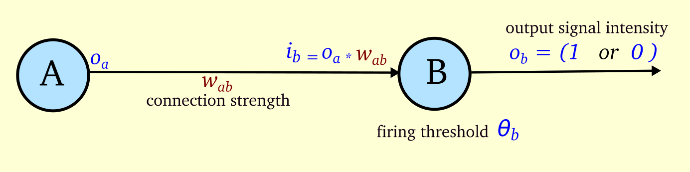
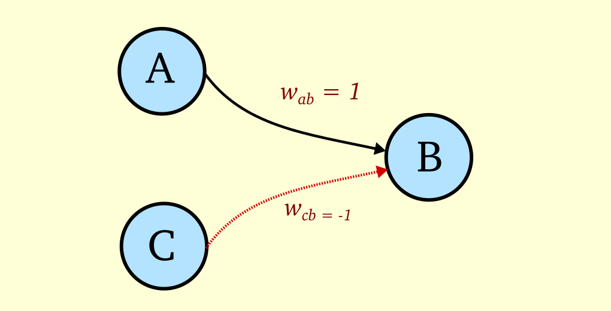
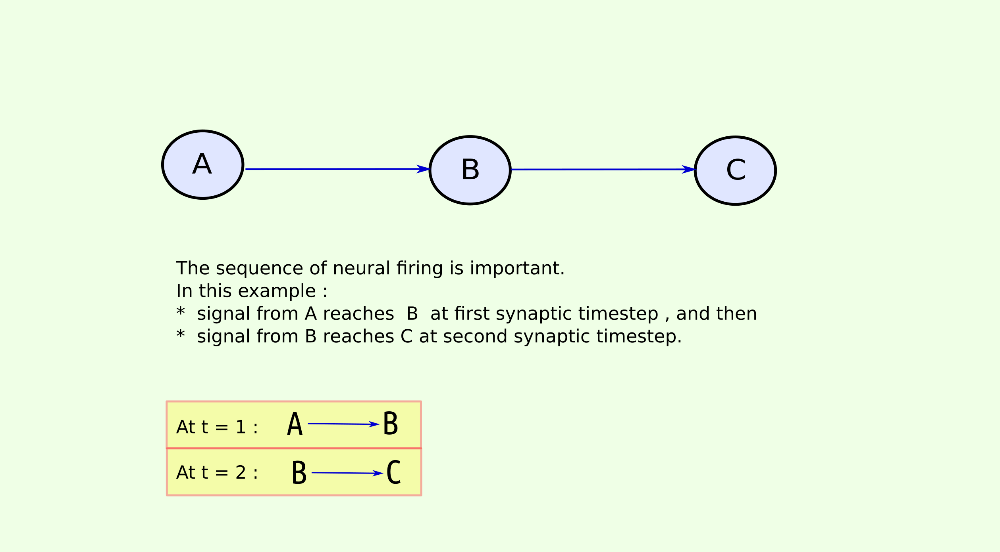
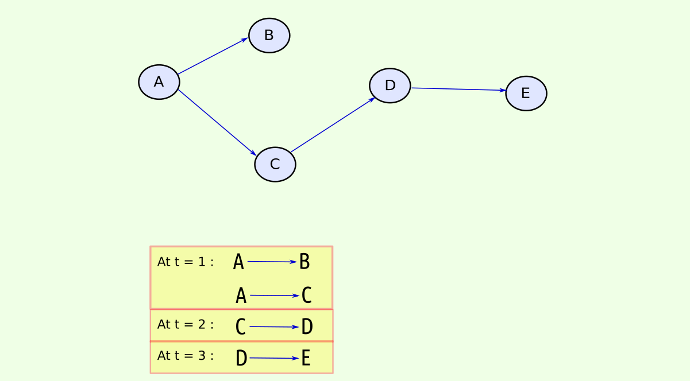
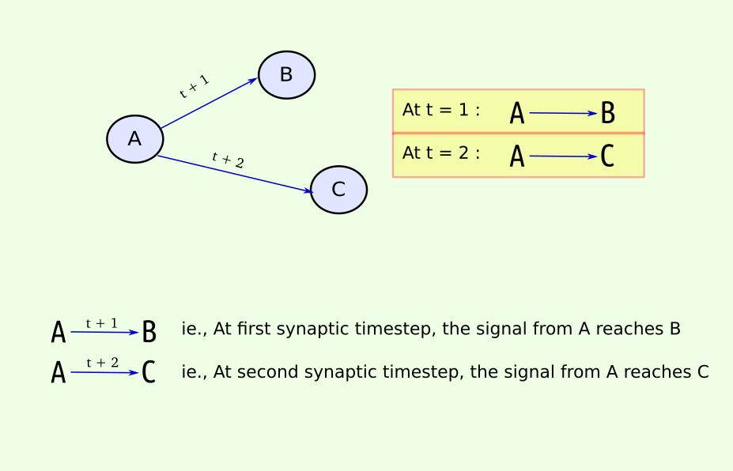
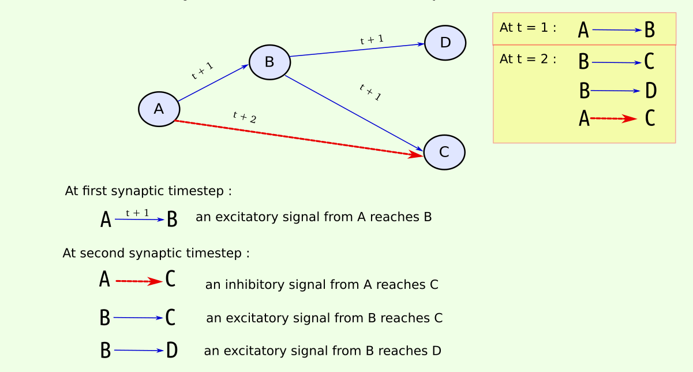
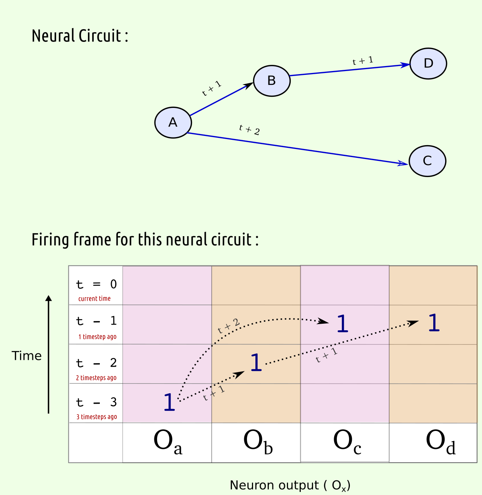

Neuron model
Description of the neuron model used :
• Each neuron N has a threshold θn
• Each neuron N recieves input signal of intensity in
• When the input signal intensity in is greater than or equal to the neuron's threshold θn , then the neuron fires with output signal intensity On
In this neuron model, there are two types of neurons :
(i) Binary neurons , which produce only binary output when activated;
If ia ≥ = θa , then Oa = 1 ; else Oa = 0
(ii) Non-binary neurons , which produce output signal intensity equal to input when activated;
If ia ≥ = θa , then Oa = ia ; else Oa = 0
Binary neurons are represented as circles while non-binary neurons are represented as squares.
Connection weights:
• Connections may exist between two neurons and the strength of the connection is termed as 'connection weight'
• If neuron A has a downstream connection to neuron B , the 'connection weight' from A to B can be represented as wab
• When the neuron A sends an output signal Oa to neuron B, the signal is amplified by a factor wab
ie., the input signal to neuron B is : ib = Oa * wab
• When the input signal intensity ib is greater than or equal to the neuron B's threshold θb , then neuron B fires

Input signal to Neuron B = output signal from A * ( connection strength from A to B)
ie., ib = Oa * wab
If ib ≥ θb , then Ob = 1 ; else Ob = 0

Input signal to Neuron B = output signal from A * ( connection strength from A to B)
ie., ib = Oa * wab
If ib ≥ θb , then Ob = ib ; else Ob = 0
Excitatory and Inhibitory connections:
• The signal from one neuron to another could be either excitatory or inhibitory.
• An incoming inhibitory signal makes a neuron less likely to fire.
• Excitatory connections have positive connection weights ,for example : wab = 0.8
• Inhibitory connections have negative connection weights ,for example : wab = -1

Let Neuron B’s firing threshold θb = 1
An excitatory connection wab exists from neuron A to neuron B with connection weight 1
An inhibitory connection wcb exists from neuron C to neuron B with connection weight -1
If neuron A and neuron C fire at the same time , with output intensity 1 each, then :
Input to neuron B : ib = ( Oa * wab ) + ( Oc * wcb)
ib = ( 1 * 1 ) + (1 * -1 )
ib = 0
(The excitatory signal from A is cancelled out by the inhibitory signal from C)
Since ib < θb , neuron B doesn’t fire.
Synaptic steps in a Firing sequence
• In a neural circuit, all neurons do not fire at the same time.
• They fire in a sequential order, depending on the way they are connected to each other.
• The upstream neurons fire first, followed by the downstream neurons.

Sequence of firing :
Neuron A fires , then after a few milliseconds B fires , then after a few milliseconds C fires .
The signal from A reaches B in one "synaptic step"
The signal from A reaches C in two "synaptic steps"

Sequence of firing :
Neuron A fires , then after a few milliseconds B & C fire at same time , then D fires, then E fires .
So it has taken 'three steps in time'(synaptic timesteps) for the signal from A to reach E
Temporal connections : Timed delay in neurotransmission
• In this model, we introduce connections that have an inbuilt delay in transmission ;
• A signal through t+1 connection reaches the target neuron in one synaptic timestep
• A signal through a t+2 connection reaches the target neuron in two synaptic timesteps.
• A connection can have upto t+H connections, where H is the maximum delay allowed for signal transmission for that neural circuit.


Sequence of firing :
Neuron A fires , then after a few milliseconds B fires , then after a few milliseconds C & D fire at same time .
Since there is a t+2 connection from A to C, the signal from A reaches C at the sametime the signal from B reaches C
Firing frame : Representing neuron states over time
• To help with visualizing the firing states of neurons over time, we can tabulate the output signals of neurons over time.
• In this table, which we term as "Firing Frame", we have time in Y axis and neuron names in X axis
• Each cell represents the output signal intensity of a neuron at specific time

In this neural circuit composed of binary neurons, (assuming that firing thresholds are met)
the sequence of firing is : A fires first, then B & C fire at same time, then D fires , and then E fires.
The output of each of these binary neurons is 1 , which is entered in the cell corresponding to the time the neuron fired.

In this neural circuit, note that the connection from A to C is a t+2 connection,
so it takes two synaptic steps for the signal from A to reach C ,upon which C fires.
Interactive examples:
Fig 1.a. Binary neuron
Fig 1.b. Binary neuron with connections
Fig 2.a. Non-binary neuron
Fig 2.b. Non-binary neuron with connections
Fig 3. Inhibitory connections
Fig 4.a. Firing sequence 1
Fig 4.b. Firing sequence 2
Fig 5.a. Temporal connections 1 (with firing frame)
Fig 5.b. Temporal connections 2 (with firing frame)